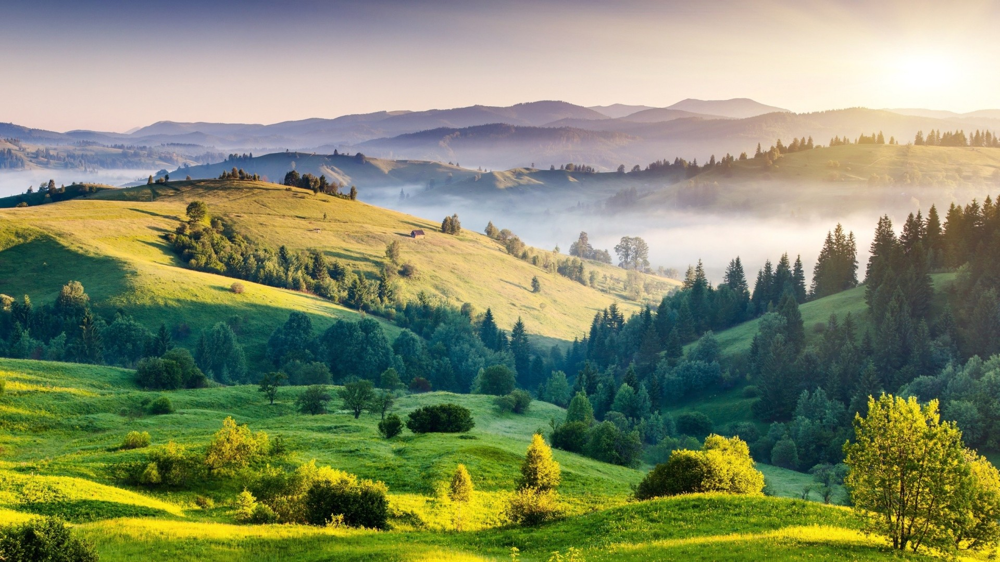

Katka a Vašek
se budou brát
27. srpna 2022

Katka a Vašek
se budou brát
27. srpna 2022
Úvod
Vítejte na našem svatebním webu. Zde jsme pro vás připravili všechny důležité informace o programu a místě svatby, ubytování, darech a dalších podstatných detailech. 😉